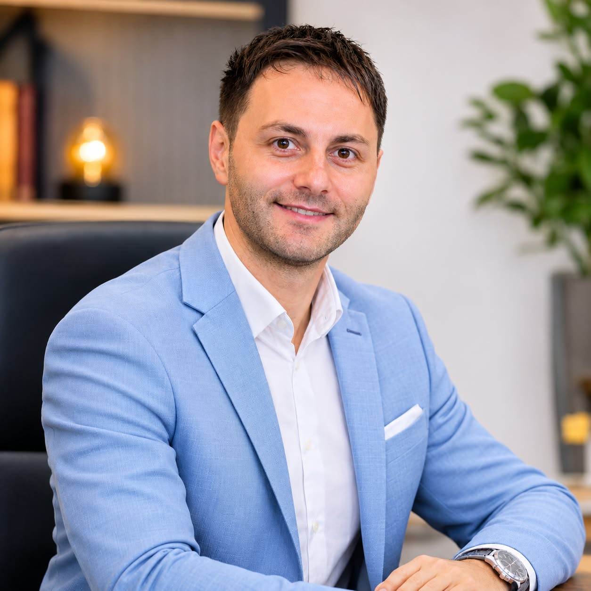

Poliță RCA
Asigurarea obligatorie de răspundere civilă auto pentru prejudiciile produse terților, în condițiile legii.
Cere ofertă RCA →Marius Popa · Contact pentru asigurări
Ai nevoie de o poliță RCA, CASCO, de protecție pentru locuință, sănătate sau activitatea profesională? Discută direct cu Marius despre variantele disponibile și condițiile lor.

Tipuri de asigurări
Selectează categoria de interes. Fiecare buton pregătește un mesaj WhatsApp pentru Marius, ca să poți cere informații despre polița dorită.
Asigurarea obligatorie de răspundere civilă auto pentru prejudiciile produse terților, în condițiile legii.
Cere ofertă RCA →Asigurare facultativă pentru propriul autovehicul. Riscurile acoperite depind de produs și de condițiile poliței.
Cere detalii CASCO →PAD acoperă dezastrele naturale prevăzute de lege. O poliță facultativă poate include riscuri suplimentare, precum incendiu sau avarii.
Cere detalii locuință →Opțiuni de protecție financiară pentru persoanele apropiate, în funcție de produs și de situația personală.
Cere detalii →Informează-te despre serviciile medicale incluse, limitele de acoperire, perioadele de așteptare și excluderi.
Cere detalii →Protecție pentru anumite evenimente neprevăzute în călătorie, conform condițiilor poliței.
Cere detalii →Răspundere civilă profesională pentru profesii eligibile, cu limite și condiții specifice activității.
Cere detalii malpraxis →Asigurări pentru anumite riscuri privind spațiile, echipamentele, bunurile și activitatea unei companii.
Cere detalii →Solicită informații despre protecția transporturilor sau despre forme de răspundere civilă, în funcție de activitate.
Cere detalii →Opțiuni de plată

Dacă preferi să nu achiți întreaga sumă dintr-o dată, întreabă-l pe Marius Popa despre posibilitatea finanțării unei polițe de asigurare prin TBI Bank.
Marius Popa · Persoană de contact, Bacău. Finanțarea este acordată de TBI Bank, în funcție de condițiile și eligibilitatea stabilite de finanțator. Această pagină nu constituie ofertă fermă de credit sau de asigurare.
Contact direct
Marius este persoana de contact pentru solicitările de asigurare prezentate pe această pagină, în contextul colaborării cu DESTINE Broker.
Îi poți spune ce tip de poliță cauți și poți cere explicații despre condițiile produselor disponibile înainte de a lua o decizie.
Aceasta este o pagină independentă de prezentare și contact, nu site-ul oficial DESTINE Broker. Titulatura și statutul profesional exact al lui Marius trebuie confirmate înainte de folosirea lor în materiale publicitare.
✓ Ce riscuri sunt acoperite?
✓ Care sunt limitele și franșizele?
✓ Ce situații sunt excluse?
✓ Care este perioada de valabilitate?
✓ Ce documente sunt necesare și cum se anunță o daună?
Întreabă pe WhatsAppSimplu și clar
Nu trebuie să știi dinainte toate detaliile tehnice. Începi prin a spune ce ai nevoie să asiguri.
RCA, CASCO, locuință, malpraxis sau altă categorie.
Comunici solicitarea și afli ce informații sunt necesare pentru ofertare.
Verifici prețul, riscurile acoperite, limitele și excluderile înainte de alegere.
Informații utile
Polița RCA acoperă răspunderea civilă pentru prejudicii produse terților prin accidente de vehicule, în limitele și condițiile prevăzute de lege. Nu este echivalentă cu protecția facultativă CASCO pentru propriul vehicul.
RCA este obligatorie în situațiile prevăzute de lege și privește prejudiciile produse terților. CASCO este facultativă și poate acoperi anumite riscuri privind propriul autovehicul, conform contractului.
PAD privește riscurile de cutremur, inundații din cauze naturale și alunecări de teren, în condițiile legii. Nu acoperă toate incidentele dintr-o locuință. O poliță facultativă poate completa protecția pentru riscuri precum incendiu, avarii la instalații sau alte evenimente, în funcție de contract.
Daunele provocate de o avarie la instalațiile interioare nu sunt același lucru cu inundațiile din cauze naturale acoperite de PAD. Unele polițe facultative pot include daune din apă și/sau răspundere civilă față de vecini. Acoperirea efectivă trebuie verificată în condițiile poliței.
Profesii eligibile, obligațiile aplicabile, limitele de despăgubire, excluderile, perioada de valabilitate și condițiile de notificare a unei reclamații. Acestea diferă între produse.
Poți trimite o solicitare de informații prin WhatsApp sau telefon. Înainte de încheiere, verifică documentele și condițiile ofertei concrete.
Contact
Spune-i lui Marius ce cauți și solicită detalii despre opțiunile disponibile.